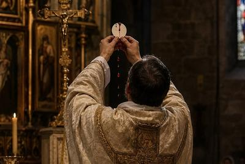

Cada año, millones de católicos alrededor del mundo celebran su solemne festividad del Corpus Christi (en latín, «Cuerpo de Cristo»), oficialmente denominada «Solemnidad del Cuerpo y la Sangre de Cristo». La fecha varía cada año, determinada sesenta días después del Domingo de Resurrección. Es una de las celebraciones más importantes del calendario católico, destinada a exaltar el dogma de la Eucaristía (la creencia de que el pan y el vino consagrados en la misa dejan de ser pan y vino, para convertirse literalmente en el cuerpo y la sangre de Jesús), aunque conserven exactamente el mismo aspecto y propiedades que tenían antes: sabor, olor, textura y composición química.


Ya desde esta definición nos encontramos ante un fuerte desafío intelectual: una transformación total que no produce ningún cambio observable ni demostrable. Es decir, una metamorfosis tan perfecta, que es tan indistinguible como cuando no ocurre ningún cambio. Sin embargo, la historia de cómo surgió esta festividad resulta más interesante. Su principal impulsora fue Juliana de Cornillon, también conocida como Juliana de Lieja, monja agustina nacida en la actual Bélgica en 1192. Según la tradición, cuando Juliana tenía unos dieciséis años, comenzó a experimentar visiones (alucinaciones) místicas recurrentes, contemplando una luna llena brillante atravesada por una extraña franja oscura. Y la interpretación fue todavía más extravagante: la luna representaba a la Iglesia en la Tierra, mientras que la mancha negra simbolizaba una supuesta carencia en el calendario litúrgico: faltaba una festividad dedicada a venerar la Eucaristía.
Hoy, si alguien afirmara haber visto una luna con una mancha oscura y concluyera que ello exige crear una nueva festividad religiosa internacional, podría acabar recibiendo la visita de un psicólogo. Sin embargo, en el siglo XIII podía terminar influyendo en la agenda religiosa de toda Europa.
Mientras tanto, otro protagonista involuntario se encontraba lejos de allí, en la ciudad de Praga, perteneciente hoy a la República Checa. Pedro de Praga era un sacerdote considerado piadoso, pero tenía un problema: pensaba. Y por tanto, experimentaba frecuentes dudas sobre si el pan y el vino realmente se transformaban en el cuerpo y la sangre de «Cristo» durante la misa. Así que, aquejado por esa crisis de fe, emprendió una peregrinación a Roma, deteniéndose durante el viaje en la localidad italiana de Bolsena, para celebrar misa en la Basílica de Santa Cristina. Y ocurrió allí lo que definió todo: según la tradición, durante la consagración la hostia, ésta comenzó a sangrar, cayendo las gotas sobre el corporal, el paño de lino utilizado en el altar. Sobrecogido, Pedro intentó ocultar lo sucedido doblando la tela, pero la misteriosa sustancia siguió atravesando capas y manchando incluso el piso de mármol.
Se trató de un «milagro» extraordinariamente oportuno. El Papa de entonces, Urbano IV, residía en la cercana ciudad de Orvieto, y resulta que, a raíz de las visiones de Juliana de Cornillon, estaba considerando instituir una festividad universal dedicada a la Eucaristía, cuando aparece de repente un supuesto milagro que parece confirmar exactamente aquello que se deseaba promover. Una coincidencia que para cualquier historiador crítico resulta, como mínimo, curiosa.
El corporal manchado fue llevado a Orvieto, donde el Papa ordenó investigar el caso, y entre quienes participaron en el análisis se encontraba el célebre teólogo Tomás de Aquino, quien además recibió el encargo de redactar la liturgia de la nueva festividad. El resultado fue una serie de himnos y textos litúrgicos de gran influencia cultural, que todavía hoy forman parte de la tradición católica. Así que finalmente, el 11 de agosto de 1264, mediante la bula Transiturus, Urbano IV estableció oficialmente la festividad del Corpus Christi.
De esta manera, una visión mística y una hostia supuestamente sangrante, se combinaron para producir una de las mayores celebraciones religiosas del planeta. Pero curiosamente Pedro de Praga, cuya crisis de fe desencadenó toda esta cadena de acontecimientos, nunca fue canonizado ni declarado beato. Podría pensarse que haber sido protagonista de un milagro que dio origen a una de las principales festividades católicas, garantizaría algún reconocimiento extraordinario, pero no ocurrió así. La Iglesia consideró que no bastaba para merecer los altares, por lo que Pedro (quien experimentó una duda racional sincera) simplemente regresó a la oscuridad histórica.
Sin embargo, aunque aquel episodio fue considerado durante siglos prueba contundente de la presencia real de «Cristo» en la hostia, siglos después apareció un invitado inesperado: la ciencia. Y con el desarrollo de la microbiología comenzaron a surgir explicaciones naturales para muchos fenómenos conocidos como «hostias sangrantes». Entre estas explicaciones destaca la bacteria Serratia marcescens, un microorganismo que crece sobre materiales ricos en almidón y produce un pigmento rojo denominado prodigiosina. El resultado visual coincide sorprendentemente con el aspecto de la sangre fresca o coagulada. Hoy sabemos además que esta bacteria puede comportarse como un patógeno oportunista, capaz de causar infecciones graves en determinadas circunstancias. Naturalmente, nadie puede analizar científicamente una hostia del siglo XIII, ni existe forma de demostrar que éste fue exactamente el caso de Bolsena. Pero sabemos que fenómenos similares documentados posteriormente han encontrado explicaciones microbiológicas perfectamente naturales. En todo caso, es mucho más factible que se haya tratado de esto, y no del verdadero sangrado antinatural de una pieza redonda de pan ácimo.
Pero aparece entonces una ironía histórica difícil de ignorar: durante siglos generaciones enteras contemplaron aquellas manchas rojizas como evidencia de una intervención sobrenatural. A lo que la microbiología moderna respondió con una explicación mucho menos celestial: microorganismos haciendo lo que los microorganismos llevan haciéndolo miles de millones de años. En otras palabras, desde una perspectiva histórica crítica, el origen del Corpus Christi constituye un extraordinario ejemplo de cómo funcionan las creencias humanas. Obviamente, los protagonistas medievales actuaban dentro del marco intelectual de su época, cuando las herramientas científicas modernas simplemente no existían. Si la historia del Milagro de Bolsena (como así se terminó llamando) hubiera ocurrido en una universidad moderna equipada con laboratorios microbiológicos, no habría terminado en una bula papal. Más probablemente habría terminado en una revista de microbiología.
La festividad de Corpus Christi, sin embargo, se convirtió en una de las celebraciones más importantes y solemnes del calendario litúrgico de la Iglesia Católica. La devoción a esta fecha inspiró a exploradores y colonizadores a bautizar múltiples poblaciones con el nombre de Corpus Christi, especialmente en América. En el estado de Texas, Corpus Christi es la población más grande y famosa con este nombre. Se dice que el explorador español Alonso Álvarez de Pineda, descubrió la bahía semitropical en 1519, justo el día de la festividad.
Llegamos así a una de las paradojas más hilarantes de la historia religiosa: una de las festividades más solemnes del catolicismo, impulsada por un fenómeno que hoy muchos científicos atribuirían, al menos como hipótesis razonable, a la actividad de microorganismos. En otras palabras, el Corpus Christi es probablemente la única gran festividad religiosa del mundo que celebra más bien el metabolismo cromogénico de una bacteria. Una conclusión que seguramente habría dejado a Tomás de Aquino con la boca abierta.
[Godless Freeman]
Comentarios
Comments powered by Disqus